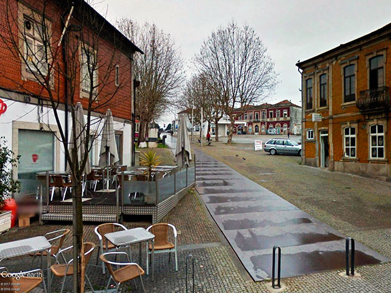

Bem-vindo à apresentação da nossa cidade ideal. Esta página descreve brevemente o tema do site e apresenta alguns pontos importantes que tornam a cidade especial.
| Local | Tipo | Uma curiosidade |
|---|---|---|
| Largo do Centenário | Área de lazer | Acolhe eventos culturais como o festival Sons na Praça e está localizado no coração da cidade de Valongo. |
| Parque da Cidade de Valongo | Parque | Área verde urbana integrada no Parque das Serras do Porto, perfeita para piqueniques e caminhadas. |
| Biblioteca Municipal de Valongo | Cultura | Possui secções infanto-juvenil e para adultos, além de um jardim com auditório exterior para concertos e eventos. |